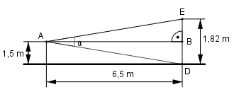

Aufgabe 95 Unter welchem Sehwinkel α erscheint eine 1,82 m große Person aus einer Entfernung von 6,5 m und einer Augenhöhe von 1,5 m?

Im Dreieck ABE: 1,82 m – 1,5 m tan α' = ---------------- = 0,0492 --> α' = 2,8° 6,5 m Im Dreieck ABD: 1,5 m tan α'' = ------- = 0,2308 ---> α'' = 13° 6,5 m α = α' + α'' = 2,8° + 13° = 15,8°